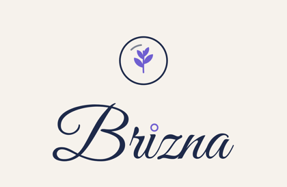
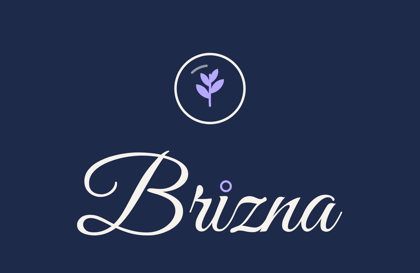
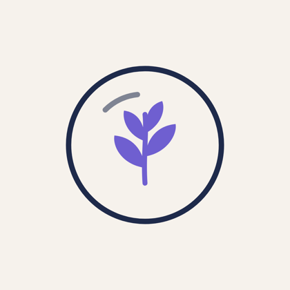
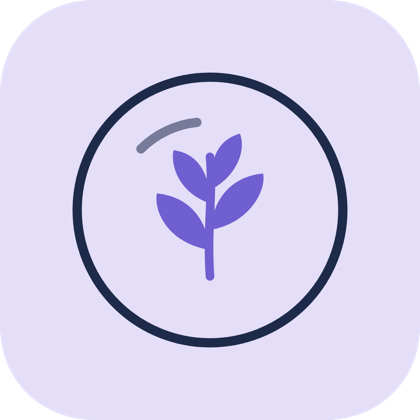
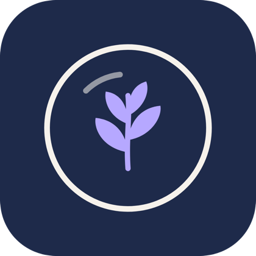

Archivos de la marca
Toca «Descargar» en cada archivo. Para escribir tus datos en la tarjeta y bajarla lista, abre la guía interactiva. En el iPhone se guarda en la app Archivos; para guardar una imagen en Fotos, mantén el dedo pulsado sobre ella.
Toca «Descargar» en cada archivo. Para escribir tus datos en la tarjeta y bajarla lista, abre la guía interactiva. En el iPhone se guarda en la app Archivos; para guardar una imagen en Fotos, mantén el dedo pulsado sobre ella.
Cuatro versiones del logo. «Azul» para fondos claros, «claro» para fondos azul oscuro. «Transparente» para ponerlo encima de otras cosas.





Para imprimir en grande, pegatinas o rotulación: se pueden agrandar sin perder calidad.
85 × 55 mm con 2 mm de sangrado para la imprenta. El reverso tiene huecos en gris para tus datos.
Foto de perfil para Instagram y WhatsApp Business, y plantillas para publicar.
Fondos con ramitas y burbujas para historias, fondo de pantalla y portadas.
Icono de la pestaña, icono del iPhone e imagen que sale al compartir el enlace.
La guía completa y todo junto en un zip.